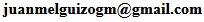

About me
Hello, my name is Juan and I am currently a student focusing on web development. My studies have equipped me with a solid foundation in various web technologies such as HTML, CSS, JavaScript, and more. I am always eager to learn and adapt to new technologies and trends in the web development industry.
Education
Aplications Web Developer
- During the learning period of this course, I have acquired extensive knowledge of HTML, CSS, JavaScript, and PHP. Additionally, I have engaged in self-learning of Bootstrap, a popular HTML, CSS, and JS library used for building responsive and feature-packed frontend designs. This comprehensive understanding of these technologies equips me with the basic skills necessary for web development and design. Also, during this time, I have learned to use technologies such as Git, GitHub, Azure, or AWS.
Microcomputer Systems and Networks
- During those years, I learned the basic characteristics of networks, as well as the types of servers and protocols currently in use. Additionally, I learned to set up various servers such as DHCP, DNS, FTP, email server, etc. This time has helped me to better understand the technologies behind becoming a better web developer.
Experience
Web content editor (Universitat de València) - FCTs
- Mainly, I was responsible for modifying the content of the web pages. We used a non-commercial CMS, which was created specifically for them, allowing us to easily modify each section of the page. Sometimes, when it couldn't be done with the CMS, we would also modify some things with raw HTML. This was a great first work experience for me.
Skills
Languages:
- HTML
- CSS
- JavaScript
- PHP
- Java
- MySQL
Frameworks:
- Bootstrap
- Laravel
Tools:
- Git
- GitHub
- Beginner in Azure and AWS
Projects
-
Tic Tac Toe
Here is the Tic-Tac-Toe game made in Java where we used threads, libraries, database access, and sockets for online LAN play. It includes a login for accessing your user account or registering, and offers both online and single-player modes. It also stores your wins, losses, and draws.
https://github.com/juanmelmos/TicTacToe -
Final project of cycle
Here will be the final project of the cycle that I study this year.
Contact me
Feel free to reach out to me at  or connect with me on: